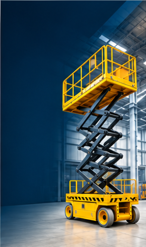

Scissor Lifts

Material Positioning
Lift materials to the working height you need.
ARYVON scissor lifts provide a stable platform for raising and positioning goods in industrial operations. Choose a mobile self-propelled unit or a stationary floor-mounted platform to suit the task and workspace.
Available configurations
- Self-propelled scissor lifts for mobile work areas
- Floor-mounted lifts for fixed material transfer points
- Platform arrangement selected for your load and workflow
Scissor Lift Variation
Self-Propelled Scissor Lift
A mobile scissor lift provides an elevated work platform that can be repositioned around a facility as tasks change. It is suited to operations that need flexible access and material positioning at different work areas.
Discuss This Configuration